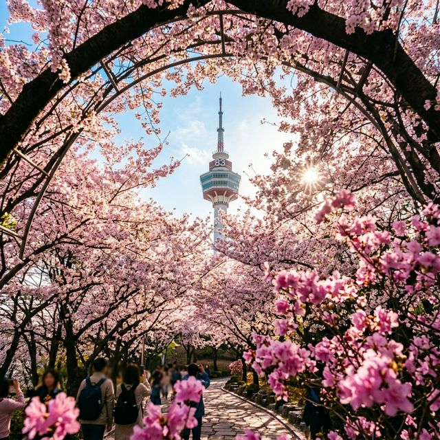
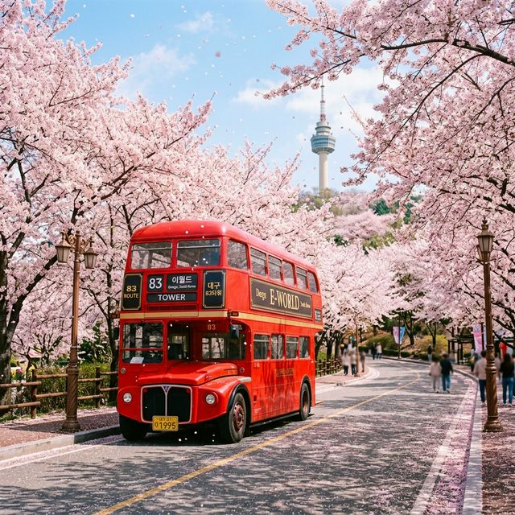
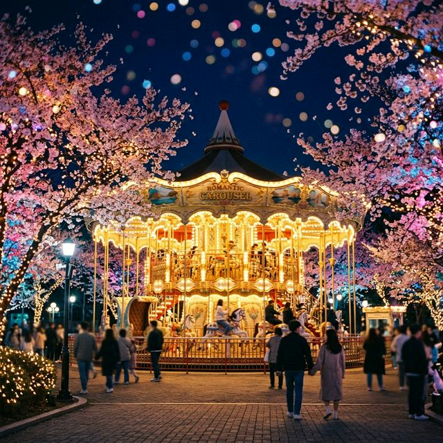

▲ 83타워로 이어지는 벚꽃 터널 아래에서 맞이하는 2026년의 찬란한 봄
솔직히 말씀드리면, 대구의 벚꽃은 이미 지난주에 절정을 지났습니다. 하지만 이월드가 특별한 이유는 바로 지형적 특성 때문인데요. 해발 고도가 조금 더 높은 83타워로 올라가는 길목과 파크 안쪽의 빽빽한 나무들 덕분에 시내보다 개화 시기가 늦고 만개 기간이 길게 유지됩니다.
오늘, 4월 3일 기준으로 실시간 상황을 체크해 본 결과, 바닥에 하얀 카펫처럼 깔린 꽃잎과 나무에 아직 매달려 있는 꽃송이들이 조화를 이뤄 '꽃비가 가장 예쁘게 내리는' 단계에 진입했습니다. 이번 주말인 4월 4일과 4월 5일이 사실상 2026년 대구 벚꽃을 배웅할 수 있는 마지막 기회입니다. 더 늦기 전에 운동화 끈을 꽉 매고 달려가야 할 이유 충분하죠?

▲ 벚꽃비가 내리는 길가에 멈춰 선 이월드의 상징, 빨간 2층 버스 포토존
이월드 하면 가장 먼저 떠오르는 상징이죠. 영국 런던을 연상시키는 이 빨간 버스는 벚꽃 시즌이 되면 꽃나무 아래로 자리를 옮깁니다. 버스 2층에서 창밖을 내다보는 컷은 물론이고, 버스 계단에 앉아 연인과 손을 잡는 뒷모습 컷은 인스타그램 업로드 필수 코스입니다. 팁을 하나 드리자면, 버스 뒤편으로 가면 줄이 조금 더 짧고 꽃 가지가 낮게 내려와 있어 인물 사진이 더 잘 나옵니다.
낮에는 아기자기한 동화 컨셉이었다면, 밤에는 화려한 조명과 함께 몽환적인 분위기로 변신합니다. 벚꽃 가지 사이로 반짝이는 회전목마의 불빛을 배경으로 셔터를 누르면 누구나 화보의 주인공이 될 수 있습니다. '블라썸 라이팅' 조명이 켜지는 오후 6시부턴 줄이 길어지니 미리 자리를 선점하세요.
타워 주차장에서 성으로 이어지는 전체 구간이 거대한 벚꽃 터널입니다. 특히 바닥에 꽃잎이 수북이 쌓이는 시기라 발을 살짝 구르며 흩날리는 꽃비를 포착하는 슬로우 모션 영상 촬영을 강력 추천합니다.
바닥에 파스텔 톤의 그림이 그려진 산책로는 아이들과 함께 사진 찍기 좋습니다. 하늘에서 쏟아지는 꽃과 바닥의 화려한 색감이 대조를 이뤄 아주 생동감 넘치는 사진을 얻을 수 있습니다.

▲ 밤이 되면 더욱 마법처럼 변하는 벚꽃 조명 아래 회전목마
이월드는 현장 결제보다 온라인 예매가 훨씬 저렴합니다. 2026년 시즌 현재, 다양한 채널을 통해 할인을 받을 수 있는 방법들을 정리해 보았습니다.
| 구분 | 방법 및 혜택 | 비고 |
|---|---|---|
| 네이버 예약 | 최대 20~30% 할인 + 포인트 적립 | 당일 사용 가능 여부 확인 필 |
| 공식 홈페이지 | 시즌별 패키지(교복 패키지 등) | 이달의 카드 할인 혜택 강력 |
| 야간권 (After 5) | 오후 5시 이후 입장 시 대폭 할인 | 불꽃쇼와 야간 조명 감상 시 최적 |
왜인지 이월드에 오면 나이를 잊고 고등학생 시절로 돌아가고 싶어집니다. 실제로 축제 현장의 70% 이상이 교복을 입고 있을 정도로 '교복+벚꽃' 조합은 이곳의 국룰인데요. 이월드 내부에 위치한 대여소나 입구 근처의 전문 대여점을 이용하면 세라복부터 트렌디한 체크무늬 교복까지 취향껏 고를 수 있습니다.
대여료는 하루 기준 약 2만 원 내외이며, 신분증을 맡겨야 하니 꼭 챙겨오세요. 교복을 입고 빨간 버스 앞에 서면 10년은 회춘한 기분을 느낄 수 있습니다. 솔직히 처음엔 조금 쑥스러울 수 있지만, 막상 산책로에 들어서면 교복을 입지 않은 사람이 외로울 정도니 용기를 내어보시길 권합니다!
대부분의 방문객이 정문 주차장을 이용하지만, 벚꽃을 가장 효율적으로 즐기려면 83타워 주차장을 공략해야 합니다.
주차 요금은 일반 이용객 3,000원이며, 83타워 내 레스토랑 이용 시 무료 주차가 가능하니 식사 계획이 있다면 참고하세요. 주말에는 정문 쪽 차량 정체가 심하므로 두류공원 뒷길을 통해 타워로 바로 진입하는 경로를 추천합니다.
이월드 내에도 다양한 스낵 코너가 있지만, 대구까지 왔다면 로컬의 맛을 빼놓을 수 없습니다. 파크에서 나와 10분 거리면 도착하는 미식 포인트들입니다.